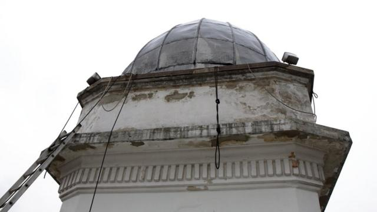
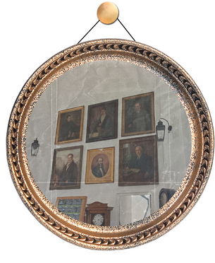
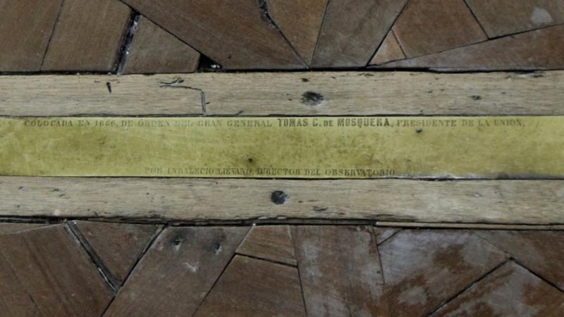

Historia
El observatorio en su aspecto màs resaltante cuenta con su historia, que enmarca no solo la historia de si mismo como el primer observatorio de America, si no tambien con su trascendencia en la historia Colombiana como un punto de importancia


Índice:
Es el más antiguo observatorio en pie de toda América, fue erigido entre 1802 y 1803 en Bogotá por un cura que realmente sabía hacer iglesias, cuando Colombia todavía no era Colombia y Bogotá se llamaba Santafe.
Su historia es la de la ciencia de este país, pero también la de sus vaivenes —terremotos, mejor dicho— políticos, la de un tesoro arquitectónico y social que casi no llega en pie a nuestros días.
Además de observatorio astronómico fue estación meteorológica, centro de la hora oficial (hasta la década de 1950), prisión improvisada, aula, estudio artístico, taller de daguerrotipos, local de venta de helados y punto estratégico en conflictos armados.
"Es la dependencia más antigua de la Universidad Nacional", explica a BBC Mundo Gregorio Portilla, director del Observatorio Astronómico Nacional.
Portilla, en lo que parece una larga tradición del observatorio, no es astrónomo. Es químico, con maestría y doctorado en física. La gran mayoría de sus antecesores fueron ingenieros civiles. Y hay una buena razón para ello, pero la abordaremos más adelante.
El primero, no obstante, era abogado y comerciante de telas y hombre afín a las ciencias, algo propio de los ilustrados de la época colonial.

"No le gustaba tanto la astronomía"
Se llamaba Francisco José de Caldas.
Fue convocado por el naturalista español José Celestino Mutis, quien estaba a cargo de la Expedición Botánica del virreinato de la Nueva Granada (su objetivo era recolectar y clasificar las especies animales y vegetales del territorio), que operaba en una casona en cuyos jardines se levantó el observatorio, en el centro de la ciudad.
"Mutis también tenía título de astrónomo real, pero él no sabía mucho de astronomía", cuenta Portilla.
Así que Mutis nombró a Caldas, quien en ese entonces se encontraba en Quito, por recomendación del polímata berlinés Alexander von Humboldt, quien recorrió América a principios del siglo XIX.
En 1805 Caldas llegó a Santafé a hacerse cargo del observatorio. "Le gustaba la botánica y no le gustaba tanto la astronomía", dice su director actual, "pero le tocó".

Los astros se miraban en aquel entonces no tanto como un fin en sí mismo, sino como referencia para elaborar mapas, especialmente requeridos por la Expedición Botánica.
En la terraza del edificio hay una columna de algo más de un metro de alto, y de unos 40 centímetros de lado, que es el origen de todos los mapas de Colombia. Desde ahí, cuenta Portilla, con instrumental astronómico, los ingenieros civiles comenzaron a describir el entorno de los pueblos y desarrollar los mapas del país.
Esa es la explicación de que tantos directores del observatorio fueran ingenieros. Como José María González Benito (nombrado en 1827), Julio Garavito (1891) o Jorge Álvarez Lleras (1930).
A González Benito, a diferencia de otros, sí le gustaba la astronomía. Tomó cursos con los astrónomos franceses Urbain Le Verrier y Camille Flammarion ("el Carl Sagan de su época", lo llama Portilla). González Benito hizo observaciones de cometas, de manchas solares, de estrellas fugaces. Para Portilla, se puede decir que él fue el primer astrónomo moderno colombiano.


Garavito es posiblemente el más famoso científico de este país: un cráter de la Luna lleva su nombre, su rostro adorna el billete de 20.000 pesos y su tumba es lugar de peregrinación de quienes creen que trae dinero.
Álvarez Lleras, por su parte, fundó en el observatorio la Academia Colombiana de Ciencias Exactas, Físicas y Naturales, que sesionó durante varios años en ese edificio (el escudo de la Academia es igual al del observatorio).
El observatorio no sólo es la dependencia más antigua de la Universidad Nacional, también es la primera edificación específicamente dedicada a la ciencia en lo que hoy es Colombia, le dice a BBC Mundo Mauricio Uribe, director del Instituto de Patrimonio Cultural de Bogotá.
El telescopio herrumbrado y fuera de uso que está dentro de la cúpula es de la década de 1930. En origen, la sala de observación era la de la segunda planta, con sus siete ventanas. Según Portilla, al entrar Caldas allí la primera vez dijo algo así como: "Uy, ¡esta vaina quedó mal orientada!".
El edificio es octogonal, está pintado de blanco, y tiene dos plantas interiores, la terraza y la cúpula, que se incorporó al edificio entre fines de la década de 1860 y comienzos de la siguiente y se subió un poco ya en el siglo XX. "Los grabados muestran que el edificio (original) terminaba en un chapitel", explica Portilla.
Álvarez Lleras, por su parte, fundó en el observatorio la Academia Colombiana de Ciencias Exactas, Físicas y Naturales, que sesionó durante varios años en ese edificio (el escudo de la Academia es igual al del observatorio).
Parece, cuenta, que Petrés se orientó con una brújula, que marca el norte magnético y no el geográfico.
Además, la edificación se pensó a la europea. O sea, que al ir desplazando el instrumental de ventana a ventana se podrían seguir los movimientos de los astros, que estarían no lejos del horizonte. Pero si es así en Europa, en el trópico eso no funciona, porque los astros se mueven en forma perpendicular a la Tierra y no pueden verse desde las ventanas.


Allí hay varios instrumentos de astronomía y medición, escritorios, retratos de los directores y otras figuras vinculadas con el observatorio, así como el escudo que lo representa, en el que se lee en latín la frase: "Con los pies en la Tierra mirando hacia el cielo".
En planta inferior se suponía que debía estar el dormitorio del astrónomo, pero Portilla duda que Caldas hubiera dormido allí, o cualquiera de los otros a cargo del observatorio.
Los "cañones"
Desde fuera pueden verse sus cañones de hierro, que…
"No son cañones", ríe Portilla.
Son desaguaderos, explica; para que no se inunde la terraza. Y cuenta que la confusión no es nueva: "Todo el mundo cree que son cañones, y pensando que eran cañones en torno a 1862 un general de apellido Canal se levantó en armas y sus hombres tomaron el observatorio".
En esas épocas de guerras intestinas, desde allí el general Leonardo Canal se enfrentó con las fuerzas de Tomás de Cipriano Mosquera, que estaban a menos de un kilómetro hacia el sur, en lo que era el convento de San Agustín.

Para hacer balas, los soldados de Canal levantaron una línea meridiana (que marca la dirección norte-sur) que se encontraba en el suelo de la segunda planta del observatorio y estaba hecha de plomo.
Recién en 1866, con Mosquera como presidente, la volvieron a colocar, esta vez en otro metal (no fuera a ser que se repitiera la historia), cuando el observatorio estaba bajo la dirección del ingeniero militar Indalecio Liévano.
Enclave revolucionario
El 20 de julio se celebran en Colombia los hechos de ese día de 1810, llamado "el Grito", cuando se dio una asonada de los criollos contra el poder real, en lo que marcó un hito en la lucha por la independencia del territorio.
¿Dónde se reunieron para planear el levantamiento? Así es, en el observatorio, porque Caldas era parte de los conspiradores criollos.
Pero el protagonismo histórico del edificio continuó mucho más allá.
En otro episodio de esos años tumultuosos de la historia colombiana, a fines de 1814 Simón Bolívar logró tomarse Santafé y sus tropas entraron al observatorio, donde dañaron equipos y libros.
Además, tomaron prisionero a Benedicto Domínguez, quien era discípulo de Caldas y estaba a cargo del observatorio.
Luego de esos años, hay una suerte de freno en la actividad del observatorio, explica Portilla: "Llega una época muy complicada, porque el avance en ciencias era muy lento".
Meteorología y helados
Recién en 1823 volvió a utilizarse por un tiempo, cuando llegó al país la Misión Boussingault, compuesta por científicos extranjeros, entre ellos el químico francés Jean-Baptiste Boussingault, quien realizó observaciones meteorológicas desde el edificio.
En los años siguientes diferentes personalidades estuvieron a cargo del observatorio, dedicadas sobre todo a cuestiones meteorológicas, tal como había hecho Boussingault.
En 1848 pasó a formar parte, como aula, del Colegio Militar, instituido un año antes. Pero en 1854 otra vez quedó abandonado, luego de un golpe militar.

El edificio fue alquilado como estudio para un artista, fue también taller de daguerrotipos y lugar de venta de helados. "Es un fiel reflejo de cómo las élites consideran a la ciencia aquí", critica Portilla.
En 1867, el presidente Mosquera es derrocado y el observatorio se convierte en su prisión, en la que pasa varios meses, antes de ser exiliado a Perú.
Es también el mismo año en que el edificio pasa a formar parte de la flamante Universidad Nacional, a la que sigue perteneciendo hoy en día.
A lo largo del siglo XX el observatorio volvió a su rol usual, pero estuvo a punto de perecer después del llamado Bogotazo, un alzamiento que tuvo lugar tras el asesinato del líder del Partido Liberal Jorge Eliécer Gaitán en 1948, quien había lanzado su candidatura presidencial en el Teatro Municipal, que se encontraba justo al lado del edificio científico.

El gobierno del Partido Conservador que se instaló en los años siguiente, dice Portilla, quiso borrar toda huella liberal. El teatro fue una de ellas, pero al parecer también quisieron tirar abajo el observatorio.
Aunque reconoce que la prueba que tiene es anecdótica, esta es la historia que cuenta: en 1951-52 venían unos buldóceres -motoniveladoras- a derrumbar el edificio, pero quien era director en ese entonces, Belisario Ruiz Wilches, logró detenerlos al decirle al oficial a cargo: "No sea imbécil, que si hace eso deja inutilizables todos los mapas de la nación, porque el origen está acá".
No era estrictamente cierta la consecuencia, pero parece que funcionó la amenaza.
Entre mediados y fines de la década de 1970 se amplía la Casa de Nariño, el palacio presidencial del país, lo que implicó la modificación de varias manzanas alrededor del edificio. El observatorio queda incorporado a los terrenos de la sede del Ejecutivo colombiano, los que hoy hay que atravesar para poder visitarlo.
"Es un pequeño museo en sí mismo", dice Uribe, director del Instituto de Patrimonio Cultural de Bogotá. El comentario le hace justicia, aunque no es un museo; es un edificio histórico, parte del patrimonio de la ciudad.
Luego de 15 años sin mantenimiento, finalmente el edificio está siendo sometido a una importante restauración y puesta en condiciones.
No fuera a ser que con todo lo que ha sobrevivido, lo terminara acabando la desatención.